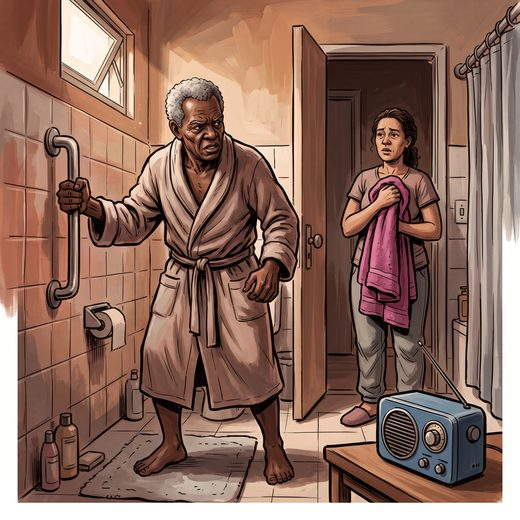

Ferramenta desta aula
Sintomas comportamentais. Roda no navegador, sem cadastro.
Consulta rápida à beira do leito
Condutas, doses e interações.
Referências da aula · 6
- Gitlin LN, Kales HC, Lyketsos CG. Nonpharmacologic management of behavioral symptoms in dementia. JAMA. 2012;308(19):2020-9. PMID 23168825. doi:10.1001/jama.2012.36918.PubMedDOI
- Kales HC, Gitlin LN, Lyketsos CG; Detroit Expert Panel on Assessment and Management of Neuropsychiatric Symptoms of Dementia. Management of neuropsychiatric symptoms of dementia in clinical settings: recommendations from a multidisciplinary expert panel. J Am Geriatr Soc. 2014;62(4):762-9. PMID 24635665. doi:10.1111/jgs.12730.PubMedDOI
- Livingston G, Huntley J, Liu KY, et al. Dementia prevention, intervention, and care: 2024 report of the Lancet standing Commission. Lancet. 2024;404(10452):572-628. PMID 39096926. doi:10.1016/S0140-6736(24)01296-0.PubMedDOI
- 2023 American Geriatrics Society Beers Criteria Update Expert Panel. American Geriatrics Society 2023 updated AGS Beers Criteria for potentially inappropriate medication use in older adults. J Am Geriatr Soc. 2023;71(7):2052-81. PMID 37139824. doi:10.1111/jgs.18372.PubMedDOI
- Brasil. Ministério da Saúde. Conitec. Relatório de Recomendação nº 1.051: PCDT da Doença de Alzheimer. Brasília: Conitec; 2025.
- Kales HC, Gitlin LN, Lyketsos CG. Assessment and management of behavioral and psychological symptoms of dementia. BMJ. 2015;350:h369. PMID 25731881. doi:10.1136/bmj.h369.PubMedDOI
Documentos oficiais
Leis e publicações do Ministério da Saúde sobre o cuidado da pessoa idosa, de acesso livre.
Abrir os documentos